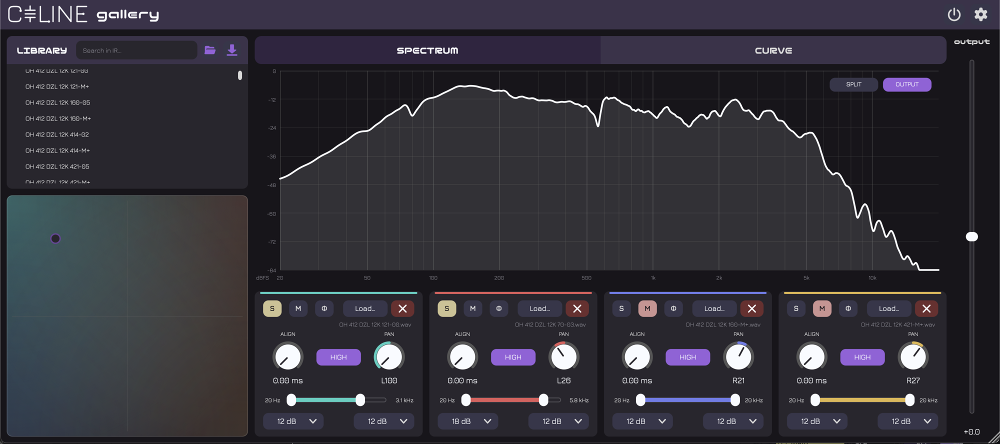

macOS
VST3 · AU · CLAP · LV2
DownloadGALLERY is an impulse response loader with fine control over blending and panning. Up to four cabinets convolve in parallel and are mixed from a single XY pad.

The cabinets' relative levels are not per-slot controls at all. One XY pad blends the four, a cabinet at each corner: the centre is a quarter each.
The shares always sum to one, so the level stays put wherever the dot goes. A corner favours its cabinet heavily, about 85 % against 5 % each, but never silences the others: taking one out is what Mute is for.
Above the strips, one graph draws all four at once, as frequency responses or as waveforms, each in its own colour. That is what makes them comparable, and what makes aligning them possible. With nothing loaded, audio passes through untouched.
Each of the four slots has its own strip. Every control is host-automatable.
Point the library at the folder you keep your cabinets in and drag files from it into the strips. The folder is remembered across every instance, project and host.
A ±12 dB trim. Since 1.3, switching bypass on and off no longer clicks.
Version 1.3.0 · macOS 11 Big Sur or later, Windows, Linux
Gatekeeper and SmartScreen will warn on first run. On macOS, remove the quarantine attribute from each file you install:
xattr -d com.apple.quarantine <file_path>
GALLERY is free open-source software under the AGPLv3, provided as-is with no warranty. See the licence summary and third-party notices.